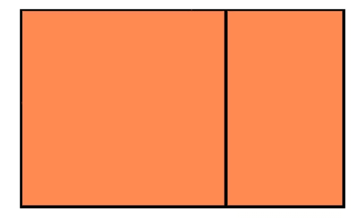
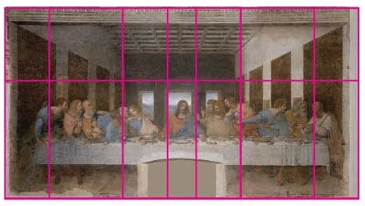

Role of Golden ratio in architecture
Every designer and artist should know about the Golden Ratio. We explain what it is and how you can use it.

The Golden Ratio is a mathematical ratio that's commonly found in nature. It can be used to create visually-pleasing, organic-looking compositions in your design projects or artwork. Whether you're a graphic designer, illustrator or digital artist, the Golden Ratio, also known as the Golden Mean, The Golden Section, or the Greek letter phi, can be used to bring harmony and structure to your projects. This guide will explain what it is, and how you can use it. We'll also point you towards to some great resources for further inspiration and study. While you're brushing up on your skills, you might also want to check out our guides to other essential art techniques, including grid theory and colour theory.
What is the Golden Ratio? Closely related to the Fibonacci Sequence (which you may remember from either your school maths lessons or Dan Brown's The Da Vinci Code), the Golden Ratio describes the perfectly symmetrical relationship between two proportions. Approximately equal to a 1:1.61 ratio, the Golden Ratio can be illustrated using a Golden Rectangle. This is a rectangle where, if you cut off a square (side length equal to the shortest side of the rectangle), the rectangle that's left will have the same proportions as the original rectangle.
So if you remove the left-hand square from the rectangle above, you'll be left with another, smaller Golden Rectangle. This could continue infinitely. Similarly, adding a square equal to the length of the longest side of the rectangle gets you increasingly closer to a Golden Rectangle and the Golden Ratio

This relates to the Fibonacci Sequence (0, 1, 1, 2, 3, 5, 8, 13, ...) , in which each term is the sum of the previous two.

Plotting the relationships in scale provides us with what's know as a Golden Spiral. This occurs organically in the natural world. If you're still a little confused, the video below gives a good overview of the Golden Ratio in use. There's a introduction, after which the teacher shows you how to construct a Golden Ratio in Illustrator. This is used to create a Golden Spiral, followed by Golden Circles.
The Golden Ratio in use
It's believed that the Golden Ratio has been in use for at least 4,000 years in human art and design. However, it may be even longer than that – some people argue that the Ancient Egyptians used the principle to build the pyramids.
World-famous buildings to inspire you In more contemporary times, the Golden Ratio can be observed in music, art, and design all around you. By applying a similar working methodology, you can bring the same design sensibilities to your own work. Let's take a look at a couple of examples to inspire you.

Ancient Greek architecture used the Golden Ratio to determine pleasing dimensional relationships between the width of a building and its height, the size of the portico and even the position of the columns supporting the structure.
The final result is a building that feels entirely in proportion. The neo-classical architecture movement reused these principles too.
Leonardo da Vinci, like many other artists throughout the ages, made extensive use of the Golden Ratio to create pleasing compositions. In The Last Supper, the figures are arranged in the lower two thirds (the larger of the two parts of the Golden Ratio), and the position of Jesus is perfectly plotted by arranging golden rectangles across the canvas.
There are also numerous examples of the Golden Ratio in nature – you can observe it all around you. Flowers, sea shells, pineapples and even honeycombs all exhibit the same principle ratio in their makeup.
Ref: creativebloq.com